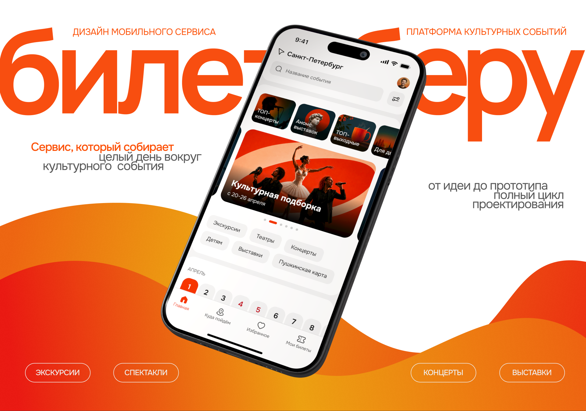
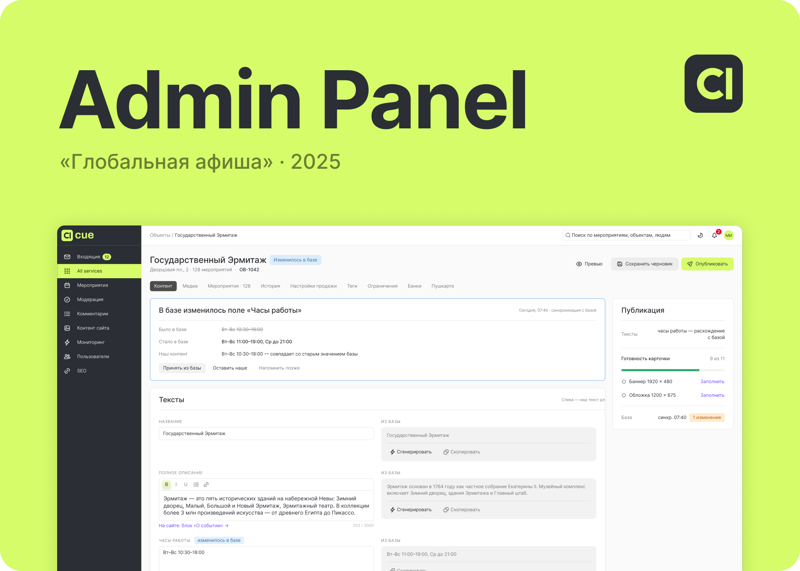

Павлов Алексей
Продуктовый UX/UI дизайнер
Проектирую продукты целиком: от исследования, ролей и информационной архитектуры до дизайн-системы, рабочего прототипа и запуска в прод.
Решения проверяю на пользователях и цифрах: юзабилити-тесты, итерации, продуктовые метрики. Собираю прототипы на React, чтобы проверять сценарии ещё до разработки.
Telegram: @LeshaGermann
Телефон: +7 953 355-57-42
Подборка продуктовых кейсов: от исследования и формулировки гипотезы до прототипа, тестирования и плана следующей итерации.

Билет Беру
Мобильное приложение · iOS
Сервис для покупки билетов на концерты, спектакли и выставки, который после покупки собирает маршрут на весь день вокруг события: места рядом, избранное и готовый план.
Discovery · JTBD · CJM · юзабилити-тестирование · UI / дизайн-система · продуктовые метрики
Роль: продуктовый дизайнер, end-to-end

ГЕОВИЗОР
Веб-платформа · B2B
Облачная платформа геотехнического мониторинга для строек и линейных объектов: показания датчиков, аварии, задачи, документы и акты в одной базе. Шесть ролей — от оператора на площадке до заказчика, и каждая видит то, что положено ей.
Discovery · ролевая модель и IA · CJM · UI / дизайн-система · рабочий прототип · юзабилити-проверка
Роль: продуктовый дизайнер, end-to-end (собственный проект)

«Глобальная афиша»
Веб-админка · B2B · в продакшене
Админка афиши музеев и площадок: контент из внешней базы доводится до уровня сайта, правки площадок идут через модерацию, а о сбоях команда узнаёт раньше посетителей. Спроектирована с нуля и сейчас каждый день работает у контент-менеджеров.
Discovery · CJM · IA и user flow · UI / дизайн-система · рабочий прототип · юзабилити-тест и вторая итерация
Роль: продуктовый дизайнер, end-to-end